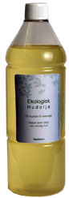
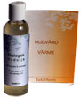
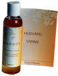
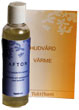
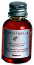
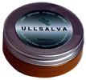
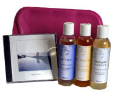
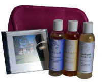

taktiform®
För friskvård och omsorg
Vårt sortiment är utvecklat för att användas i livets olika skeeenden, både baby och äldre, för frisk och hud med småsår. Används vid sol, bad, dusch.Perfekt att ta bort makeup med. Stimulerar blodcirkulation och sårläkning och är helt fantastisk att ge massage med. Gjord på exklusiva vegetabiliska och ekologiskt odlade produkter:
JOJOBAOLJA är lyxig, sammetslen, mjukgörande och fuktighetsbevarande.
SHEASMÖR är mild, bra vid känslig hud, är som balsam för torr, narig sprucken hud.
SOLROSOLJAN är en ”torr” olja Absorberas lätt. Är skyddande och näringsrik.
RAPSOLJA är mjukgörande och näringsrik. Mycket bra vid kåda och irritationer.
MANDARIN/CITRON, frisk och uppiggande. Finns i MORGON.
LAVENDEL bra vid klåda och irriterad hud. Finns i LAVENDEL.
ROSMARIN värmande och lindrande Finns i ULLSALVA.
Alla oljor har hög halt av E-vitamin som antioxidant. Stimulerar blodcirkulation och sårläkning.
 3017 STORFLASKA NEUTRAL
Ett ekonomiskt alternativ.
Folder med tips ingår.
1 liter.
 3010 NEUTRAL HUDOLJA
För alla. Passar även baby och känslig hud. Luktfri
Folder med tips ingår.
150 ml
 3011 MORGON med Mandarin/Citron
Mild och uppiggande.
Folder med tips ingår.
150 ml
 3012 AFTON: Med lavendel.
Lugnande och avslappnande.
Folder med tips ingår.
150 ml
 3021 ANSIKTSOLJA för din känsligaste hud. Len, mjukgörande och fuktighetsbevarande Lyxig,mild och dryg. Ger skydd, näring o gyllene lyster Innehåller aprikosolja, macadamirapsolja och e-vitamin samt karoten som ger färg.
25 ml
 3023 ULLSALVA Bra för torra läppar, händer, hudsprickor, nagelband, småsår, psoriasis. Bra till barnstjärtar och ömma bröstvårtor. Lindrar skyddar och mjukgör. Effektivt vattenavstötande. Innehåller ullfett, sheasmör, e-vitamin och Rosmarin
50 ml
 3083 STARTPAKET ” Taktila Toner”
Hudolja NEUTRAL á 150 ml
Hudolja MORGON a´150 ml
Hudolja AFTON á 150 ml
Värmeflaska för varmt vatten
Musik CD - ”Taktila Toner ”
 3082 STARTPAKET ”I lugn och Ro”
Hudolja NEUTRAL á 150 ml
Hudolja MORGON a´150 ml
Hudolja AFTON á 150 ml
Värmeflaska för varmt vatten
Musik CD - ”I lugn och Ro ”